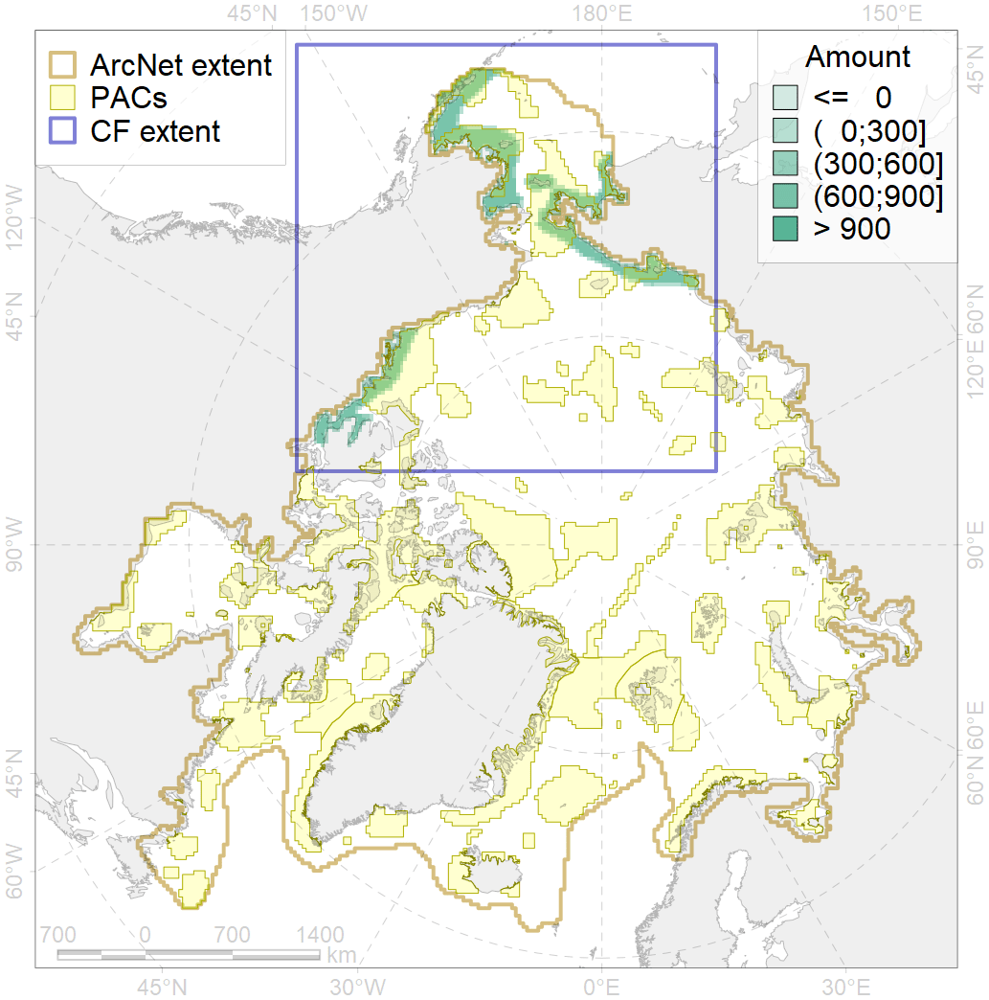
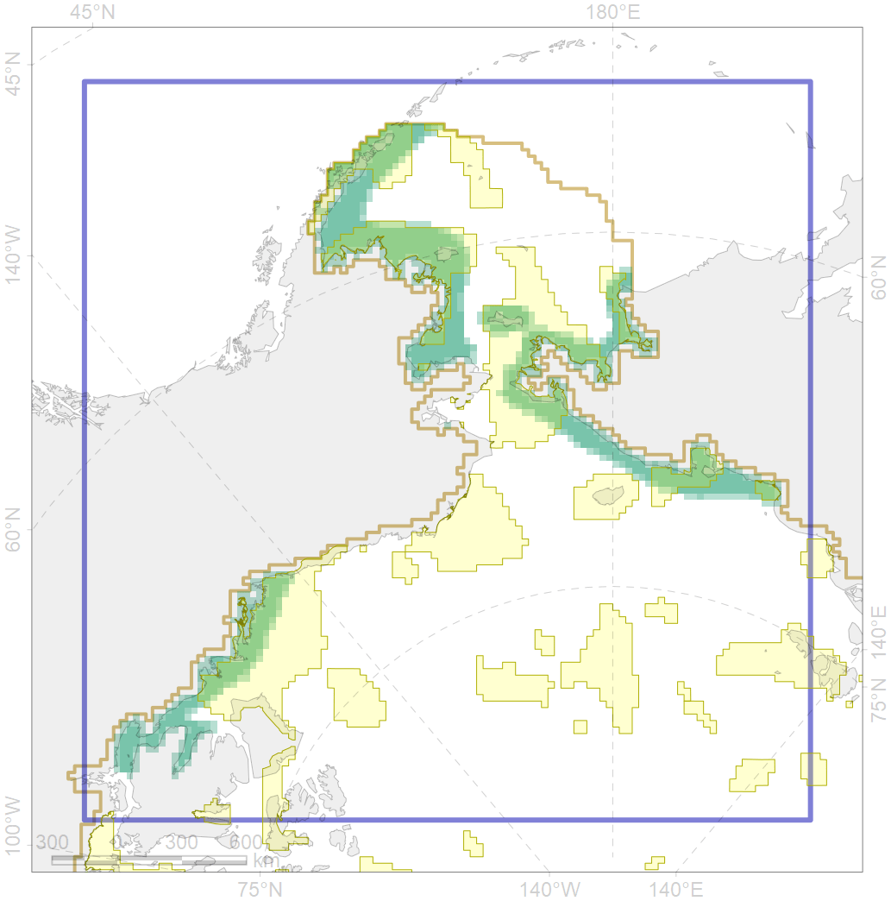

4033

| CF code | 4033 |
| CF name | Feeding area of the Dolly Varden (Salvelinus malma) |
| Time Period | 1950-2010s |
| Source(s) | Scott, Crossman, 1973; Chereshnev, 2008; Reshetnikov, 2010; Coad, Reist, 2018 |
| Seasonality | May-Nov |
| Depth Horizon | 0-100 |
| Methodology | Compiled from literature sources based on field observations |
| Use Restrictions | Open access |
| Author Name | N. Chernova |
| Notes | |
| Scenario’s Target | 0.12 |
| Target Achievement | 0.583 (Scenario: 485.6%) |
| PAC | Share of the Total Amount within the PAC | Share of the Target Achievement for the ArcNet | PAC’s Contribution to the Target Achievement |
|---|---|---|---|
| 1 | 7.6% | 62.9% | 13.0% |
| 2 | 0.3%0.3% | 2.2%2.2% | 0.5%0.5% |
| 3 | 15.7%17.5% | 124.3%135.5% | 25.6%27.9% |
| 4 | 2.5%3.1% | 16.4%20.9% | 3.4%4.3% |
| 5 | 12.9%14.0% | 105.2%112.9% | 21.7%23.2% |
| 6 | 0.0%0.1% | 0.0%0.7% | 0.0%0.1% |
| 8 | 5.1%5.1% | 34.7%34.8% | 7.2%7.2% |
| 9 | 1.2%1.3% | 6.3%6.5% | 1.3%1.3% |
| 62 | 10.2%10.8% | 81.3%83.4% | 16.7%17.2% |
| inner | 55.7%59.8% | 433.3%459.8% | 89.2%94.7% |
| outer | 44.3%56.6% | 52.3%143.4% | 10.8%29.5% |
| † supplement values are for area consistence whereas principal values are for Accenter compatible gridded stats |